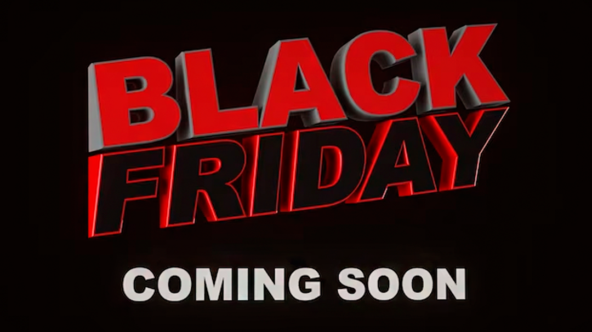
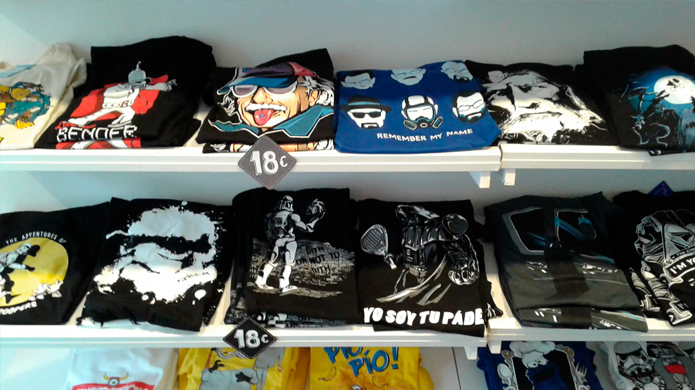
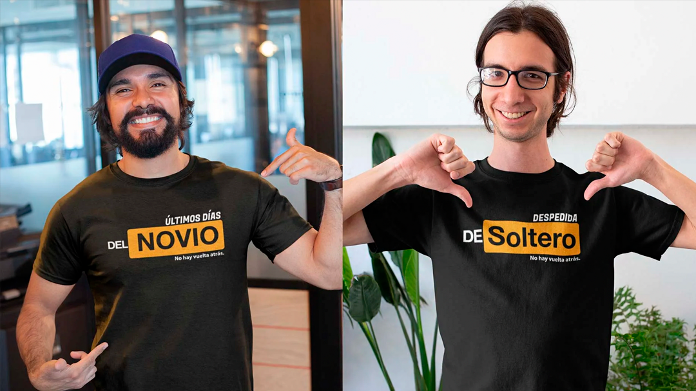
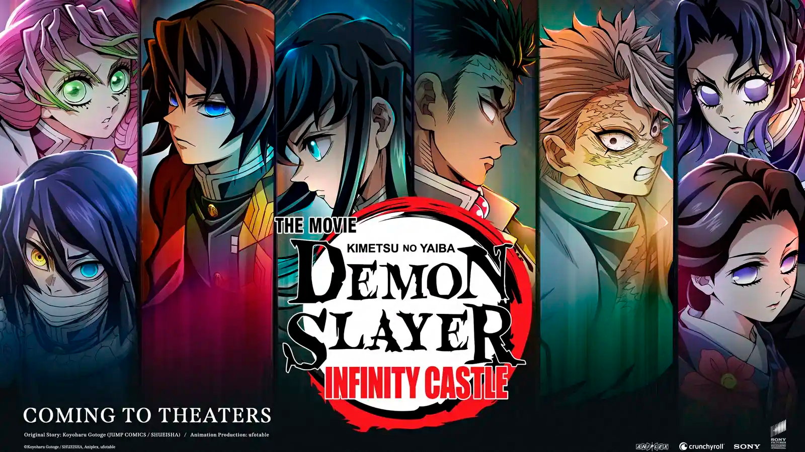
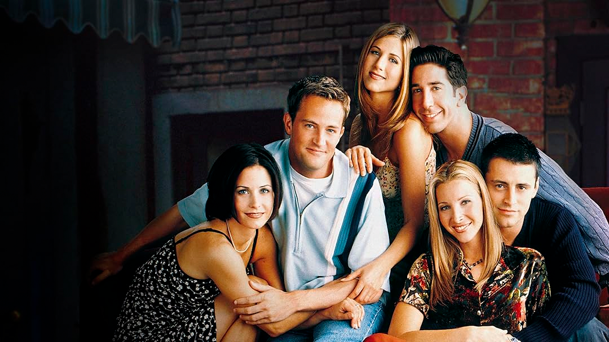

Este año, en Friking hemos decidido adelantarnos al Black Friday para que puedas disfrutar de las mejores ofertas en camisetas con diseños parodiados antes que nadie. ¡Sí has leído bien! Desde hoy, podrás conseguir nuestras camisetas a 10€, una oportunidad única para renovar tu armario con prendas divertidas y originales sin dejar a cero tu cuenta del banco.

El Joker ha sido uno de los personajes más icónicos de la cultura pop. Tras el éxito mundial de la película de 2019, Joaquín Phoenix regresa en la esperada secuela titulada “Joker: Folie à Deux”. Este filme, dirigido nuevamente por Todd Phillips, promete adentrarnos aún más en la mente del personaje, pero, ahora acompañado de Harley Quinn, papel interpretado por Lady Gaga.
¡La cuenta regresiva ha terminado! En Friking estamos emocionados de anunciar que hemos subido de nivel con nuevas colaboraciones con algunos de los influencers y humoristas más divertidos del momento. Hemos estado trabajando sin descanso y prestando atención a cada una de sus sugerencias para ofrecerles colecciones que no solo les hagan sonreír, sino que también cumplan con su más disparatadas y extraordinarias expectativas.

Las despedidas de soltero han evolucionado de simples reuniones a experiencias personalizadas que reflejan la personalidad del protagonista. En Friking, nuestras camisetas temáticas y graciosas son el toque perfecto para destacar, unir al grupo y convertir cualquier despedida en un evento inolvidable lleno de estilo y creatividad.

¡Hola fanáticos del anime! Hoy os traemos una noticia que os va a provocar emociones encontradas a más de uno. Tenemos confirmación oficial, “Demon Slayer: Kimetsu no Yaiba” no tendrá una quinta temporada. En su lugar, los creadores han optado por darle a este anime un cierre espectacular mediante tres películas. Así es, estáis leyendo bien, tres largometrajes en los que prometen dar un broche de oro a la épica historia de Tanjiro y sus amigos.

¡Hola, amigos! Si eres como yo, probablemente has visto “Friends” más veces de las que puedes contar con los dedos de las dos manos. Y si aún no lo has hecho, déjame decirte por qué esta serie sigue siendo tan especial y por qué motivo deberías darle una oportunidad, ¡incluso 20 años después de su final! Aquí van algunas de las razones que hacen de “Friends” una serie que nunca pasa de moda.
